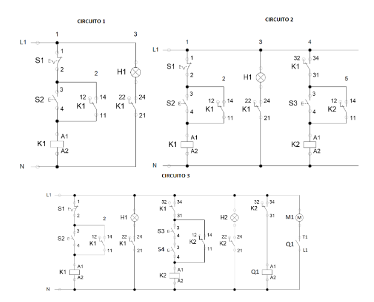

Portafolio de Actividades
Automatización industrial
Departamento de Ciencias e Ingenierías | Universidad Iberoamericana Puebla, México.
Central de control


- Resumen -
En cualquier contexto de automatización industrial, es imprescindible disponer de una terminal o panel de control que albergue todos los elementos electrónicos y/o mecánicos necesarios. En este caso, se ha desarrollado la creación de un panel de control completo con medidas adecuadas, placas y conductos correspondientes, que será utilizado en todas las prácticas durante el semestre.
- Introducción -
En cualquier tipo de sistema industrial automatizado, el panel de control eléctrico es uno de los componentes clave del sistema.En el panel de control es donde residen la mayoría de los elementos de la interfaz humana. Es decir, es donde los operarios pueden controlar el sistema industrial.Aunque cada panel de control eléctrico es diferente, adaptado al trabajo y al sistema con el que está emparejado, habrá algunos elementos comunes.
Un panel de control eléctrico industrial es una amalgama de dispositivos que utilizan energía eléctrica para supervisar y regular diversas funciones mecánicas en maquinaria y equipos industriales. Son una parte esencial en los procesos de fabricación automatizada, ya que alojan componentes electrónicos que emiten señales para dirigir el funcionamiento de máquinas y equipos. El objetivo principal de un panel de control industrial es proporcionar una caja de conexiones diseñada específicamente para el cableado y sistemas eléctricos. En términos generales, los técnicos interactúan con los controles del panel para gestionar y supervisar la planta y el proceso. Los elementos del panel de control permiten llevar a cabo diversas tareas, como supervisar la presión o el flujo en tuberías, además de indicar el estado de apertura o cierre de válvulas. Este tipo de panel se utiliza en una amplia variedad de industrias, incluyendo centrales nucleares, embarcaciones, aeronaves, así como para supervisar y controlar maquinaria. Mantener estos paneles en buen estado es esencial para asegurar el funcionamiento eficiente de los equipos y reducir la probabilidad de errores humanos o accidentes.
- Materiales -
Lista
- Desarrollo -
Se realzaron los siguietes circuitos.

Simulación
No se realizaron simulaciones para esta practica
Diseño
Para poder realizar la caja se usó Catia, es un modelo simple. La caja esta diseñada para que podamos meter cables por los laterales y podamos tener los botones y luces necesarios para nuestros circuitos
Construcción
A continuacion se mostraran las fotos de la caja terminada y los circuitos.
If you get asteroids about a kilometer in size, those are large enough and carry enough energy into our system to disrupt transportation, communication, the food chains, and that can be a really bad day on Earth.
- Resultados -
A continuacion se muestran los videos de las actividades funcionando dentro de nuestro centro de control
If you get asteroids about a kilometer in size, those are large enough and carry enough energy into our system to disrupt transportation, communication, the food chains, and that can be a really bad day on Earth.
- Conclusiones -
Se logró realizar todas las actividades propuestas en clase por lo que la práctica resultó como esperabamos.
- Referencias -
Microchip AVR® microcontroller primer: programming and interfacing, third edition (synthesis lectures on digital circuits and systems), BARRETT, Steven F. Pack Daniel J., Editorial Morgan & Claypool, 2019.
K. He, X. Zhang, S. Ren and J. Sun, "Deep Residual Learning for Image Recognition," 2016 IEEE Conference on Computer Vision and Pattern Recognition (CVPR), Las Vegas, NV, USA, 2016, pp. 770-778, doi: 10.1109/CVPR.2016.90.
J. D. Hunter, "Matplotlib: A 2D Graphics Environment," in Computing in Science & Engineering, vol. 9, no. 3, pp. 90-95, May-June 2007, doi: 10.1109/MCSE.2007.55.
- Descargables -
Descargar documento PDF: documento.pdf
Descargar codigo Arduino: codigo.ino
Descargar Archivo 3d .STL: pieza.stl